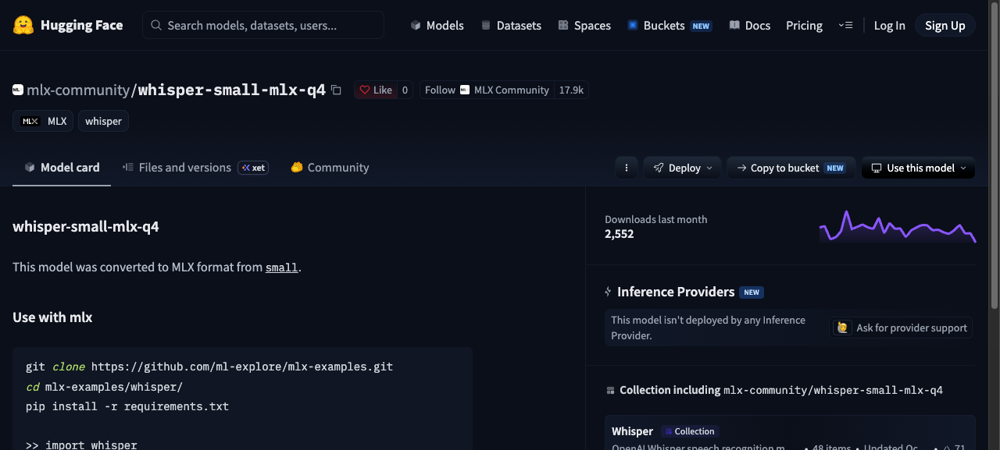
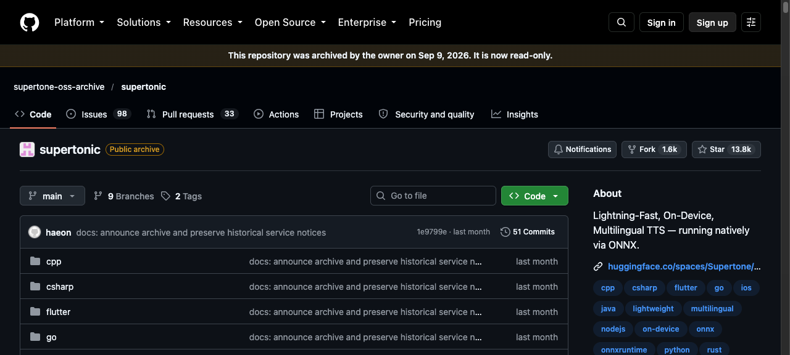
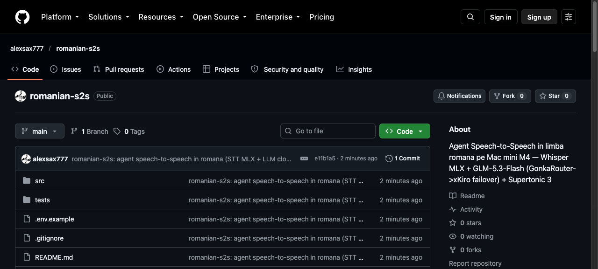

Salut.
Asta nu vorbește om.
STT
Whisper MLX · local
LLM
GLM-5.3-Flash · GonkaRouter
→ fallback xKiro, automat
TTS
Supertonic 3 · local
Un agent speech-to-speech în română — pe un Mac mini M4.

$ .venv/bin/python tests/test_stt_tts.py
run 1: STT 0.35s (RTF 0.04x)
→ Salut! Acesta este un test de sinteza vocala in limba romana
GONKAROUTER_BASE_URL=https://api.gonkarouter.io/v1
GONKAROUTER_MODEL=zai-org/GLM-5.3-Flash
primul token în stream: 0.93s
xKiro preia automat — HTTP 200

8.57s audio → 0.00s
Supertonic 3 · română · RTF 0.20x
Încă nu e real-time.
mediană tură vocală: 0.00s
E în dezvoltare — un început pentru S2S în română.

github.com/alexsax777/romanian-s2s
Narat chiar de vocea proiectului.